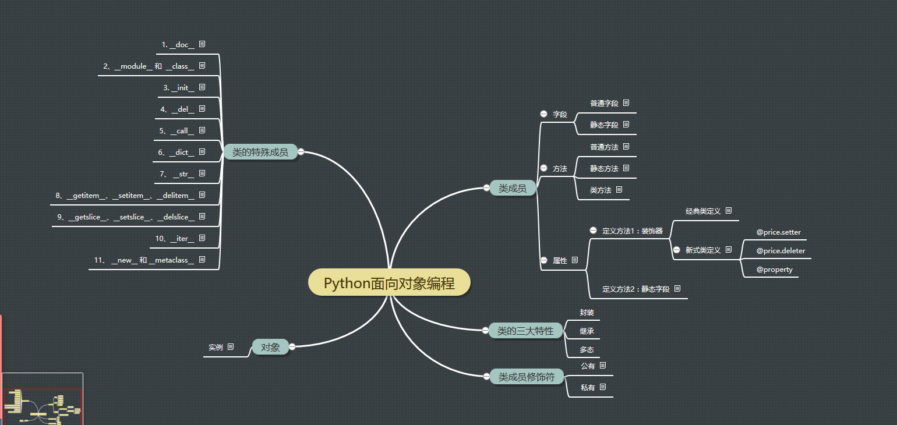
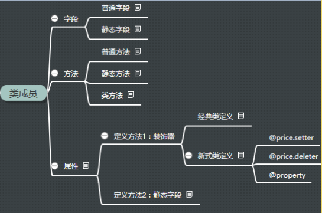

原文出处:本文由博客园博主tina.py提供。
原文连接:https://www.cnblogs.com/tina-python/p/5555275.html
原文连接:https://www.cnblogs.com/tina-python/p/5555275.html
一、总概

二、面向对象中类的成员组成

1、字段
包含静态字段（每个对象都有一份）和普通字段（每个对象都不同的数据）
class Person():
company='neusoft'#静态字段
def __init__(self,name,age,gender):
self.N=name #普通字段
self.A=age
self.G=gender
#执行静态字段
print(Person.company)#静态字段由类调用
#访问普通字段
r=Person('tina',18,'female')
print(r.A)#普通字段由对象来调用
2、方法
包括静态方法（@staticmethod,无需使用对象封装的内容）、类方法（classmethod）、普通方法（使用对象中的数据）
class Person():
def __init__(self,name,age):
self.name=name
self.age=age
def f1(self):#普通方法
print(1111)
@classmethod#类方法
def f2(cls):
print(2222)
@staticmethod#静态方法
def f3():#静态方法没有默认参数（可以加任何参数）
print(2222)
#执行普通方法：
ret=Person('tina',18)
ret.f1()
#调用类方法：
Person.f2()
#调用静态方法：
Person.f3()


普通方法：由对象调用；至少一个self参数；执行普通方法时，自动将调用该方法的对象赋值给self；
比如：调用obj1.modify() 在调用的时候就相当于把对象赋值给方法：Dbcontrl.modify(obj1) 他的触发者是对象！
类方法：由类调用； 至少一个cls参数；执行类方法时，自动将调用该方法的类复制给cls；
类方法的触发者是类，当类在触发的时候，把自己当作参数传给cls = class
类方法很少用！
静态方法：由类调用；无默认参数；
其实你在类中使用静态方法：类+静态方法其实就等于一个函数！
触发者是类，常用于一个工具类，在调用的时候不需要实例化！举例来说有个工具类，如果是普通方法每次调用的都需要实例化，如果有非常非常多的人来调用难道每次都需要实例化吗？浪费内存空间，用静态方法那么你在调用的时候就不需要实例化他了！
3、特性
又称属性或普通特性（@property 即将方法伪造成字段）
在python中属性的使用时非常少的，但是在其他语言中属性用的非常多，因为在python中属性是后来才有的，他的功能目前还不是很强大！但是他要告诉人们我也是支持属性的，所以才有了这个属性！
属性是由方法变种而来，如果python中没有属性，方法完全可以代替其功能。
属性存在的意义是：访问属性时可以制造出和访问字段完全相同的假象。
属性的基本使用：
# ############### 定义 ###############
class Pager:
def __init__(self, current_page):
# 用户当前请求的页码（第一页、第二页...）
self.current_page = current_page
# 每页默认显示10条数据
self.per_items = 10
@property
def start(self):
val = (self.current_page - 1) * self.per_items
return val
@property
def end(self):
val = self.current_page * self.per_items
return val
# ############### 调用 ###############
p = Pager(1)
p.start 就是起始值，即：m
p.end 就是结束值，即：n
#特性的补充内容：
class Foo:
def func(self):
print('func')
@property
def pp(self):
return 123
@pp.setter
def pp(self,value):
print(value)
@pp.deleter
def pp(self):
print('del')
obj=Foo()
print(obj.pp)
obj.pp=9999
del obj.pp
#特性的另一种使用方式:
class Foo():
def f1(self):
return 'sdkdlalg'
def f2(self,value):
print(value)
def f3(self):
print('lsfjsljsl')
ZO=property(fget=f1,fset=f2,fdel=f3,doc='此处是说明')
obj=Foo()
ret=obj.ZO
obj.ZO=122324
del obj.ZO
二、如何快速判断什么时候用类执行，什么时候用对象执行
个人总结：
遇到普通即用对象，其他就用类。（即普通方法、普通字段、普通特性用对象来调用；类方法，静态字段、静态方法则用类来调用执行）
老师总结：
有self的，对象调用；无self，类调用
三、成员修饰符
成员修饰符包括公有&私有
这里主要强调一下
四、类的特殊成员